- Author(s) of this documentation:
- Jacques-Olivier Lachaud
- Since
- 1.0
Part of the Tutorials.
This part of the manual describes how to use shortcuts to quickly create shapes and surfaces, to traverse surfaces, to save/load images and shapes, and to analyze their geometry.
The following programs are related to this documentation: shortcuts.cpp, shortcuts-geometry.cpp
- Note
- All rendering are made with Blender.
- See also
- Integral invariant curvature estimator 2D/3D for Integral Invariant estimators.
-
Digital Voronoi Covariance Measure and geometry estimation for Voronoi Covariance Measure estimators.
Introduction
To use shortcuts, you must include the following header:
#include "DGtal/helpers/Shortcuts.h"
And choose an appropriate Khalimsky space according to the dimension of the object you will be processing.
- See also
- moduleCellularTopology
typedef Shortcuts<Z2i::KSpace>
SH2;
typedef Shortcuts<Z3i::KSpace>
SH3;
The general philosophy of the shorcut module is to choose reasonnable data structures in order to minimize the number of lines to build frequent digital geometry code. For instance, the following lines build a shape that represents the digitization of an ellipsoid.
auto params = SH3::defaultParameters();
params( "polynomial", "3*x^2+2*y^2+z^2-90" )( "gridstep", 0.25 );
auto implicit_shape = SH3::makeImplicitShape3D( params );
auto kspace = SH3::getKSpace( params );
auto digitized_shape = SH3::makeDigitizedImplicitShape3D( implicit_shape, params );
std::cout << *digitized_shape << std::endl;
As one can see, a Parameters object stores parameter values and can be simply updated by the user with the function operator().
- Note
- Big objects (like images, explicit shapes, explicit surfaces) are always returned or passed as smart pointers (with CountedPtr). Smaller objects (like vectors of scalars, etc) are efficiently passed by value. Hence you never have to take care of their lifetime and you do not need to delete them explicitly.
Short 3D examples
We give below some minimalistic examples to show that shortcuts can save a lot of lines of code. All examples need at least the following lines:
#include "DGtal/helpers/StdDefs.h"
#include "DGtal/helpers/Shortcuts.h"
...
typedef Shortcuts<Z3i::KSpace>
SH3;
auto params = SH3::defaultParameters();
Examples requiring geometric functions (ground-truth or estimation) need the following lines (i.e. functions in SHG3):
#include "DGtal/helpers/StdDefs.h"
#include "DGtal/helpers/Shortcuts.h"
#include "DGtal/helpers/ShortcutsGeometry.h"
...
typedef Shortcuts<Z3i::KSpace>
SH3;
typedef ShortcutsGeometry<Z3i::KSpace>
SHG3;
auto params = SH3::defaultParameters()
| SHG3::defaultParameters();
ShortcutsGeometry< Z3i::KSpace > SHG3
Load vol file -> ...
-> noisify -> save as vol file.
auto al_capone = SH3::makeBinaryImage( examplesPath + "samples/Al.100.vol",
params( "noise", 0.3 ) );
auto ok = SH3::saveBinaryImage( al_capone, "noisy-Al.vol" );
-> build main connected digital surface
auto al_capone = SH3::makeBinaryImage( examplesPath + "samples/Al.100.vol", params );
auto K = SH3::getKSpace( al_capone );
auto surface = SH3::makeLightDigitalSurface( al_capone,
K, params );
CountedPtr< SH3::DigitalSurface > surface
-> extract 2 isosurfaces -> build mesh -> displays them
The following code extracts iso-surfaces (maybe multiple connected components) in the given gray-scale 3D image and builds meshes, which can be displayed.
- Note
- Iso-surfaces are built by duality from digital surfaces. The output triangulated surfaces share similarities with marching-cubes surfaces, but they are guaranteed to be 2-manifold (closed if the surface does not touch the boundary of the domain).
params( "faceSubdivision", "Centroid" )( "surfelAdjacency", 1);
auto gimage = SH3::makeGrayScaleImage( examplesPath + "samples/lobster.vol" );
auto trisurf150= SH3::makeTriangulatedSurface( gimage, params( "thresholdMin", 150 ) );
auto trisurf40 = SH3::makeTriangulatedSurface( gimage, params( "thresholdMin", 40 ) );
auto mesh150 = SH3::makeMesh( trisurf150 );
auto mesh40 = SH3::makeMesh( trisurf40 );
trace.
info() <<
"#mesh150=" << mesh150->nbVertex()
<< " #mesh40=" << mesh40->nbVertex() << std::endl;
If you wish to display them with two different colors, you may write:
QApplication application(argc,argv);
Viewer3D<> viewer;
viewer.show();
viewer << Viewer3D<>::updateDisplay;
application.exec();
-> extract 2 triangulated isosurfaces -> save as OBJ
The following code extracts all iso-surfaces in the given gray-scale 3D image and saves them as OBJ file with color information.
params( "faceSubdivision", "Centroid" )( "surfelAdjacency", 1);
auto gimage = SH3::makeGrayScaleImage( examplesPath + "samples/lobster.vol" );
auto trisurf150= SH3::makeTriangulatedSurface( gimage, params( "thresholdMin", 150 ) );
auto trisurf40 = SH3::makeTriangulatedSurface( gimage, params( "thresholdMin", 40 ) );
auto ok40 = SH3::saveOBJ( trisurf40, SH3::RealVectors(), SH3::Colors(),
"lobster-40.obj",
auto ok150 = SH3::saveOBJ( trisurf150, SH3::RealVectors(), SH3::Colors(),
"lobster-150.obj",
Structure representing an RGB triple with alpha component.
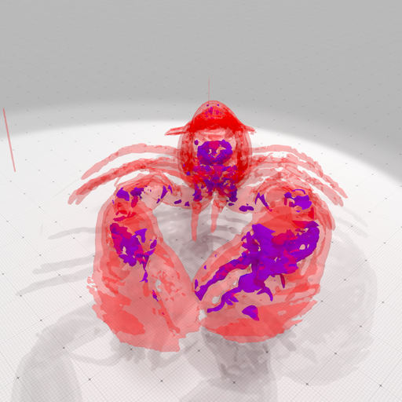
Rendering of lobster 40 (red semi-transparent) and 150 (blue) isosurfaces.
-> build main digital surface -> breadth first traversal -> save OBJ with colored distance.
You may choose your traversal order ("Default", "DepthFirst", "BreadthFirst").
params( "surfaceTraversal", "BreadthFirst" )
( "colormap", "Jet" );
auto al_capone = SH3::makeBinaryImage( examplesPath + "samples/Al.100.vol", params );
auto K = SH3::getKSpace( al_capone );
auto surface = SH3::makeLightDigitalSurface( al_capone,
K, params );
auto surfels = SH3::getSurfelRange(
surface, params );
auto cmap = SH3::getColorMap( 0, surfels.size(), params );
SH3::Colors colors( surfels.size() );
for ( unsigned int i = 0; i < surfels.size(); ++i ) colors[ i ] = cmap( i );
bool ok = SH3::saveOBJ(
surface, SH3::RealVectors(), colors,
"al-primal-bft.obj" );
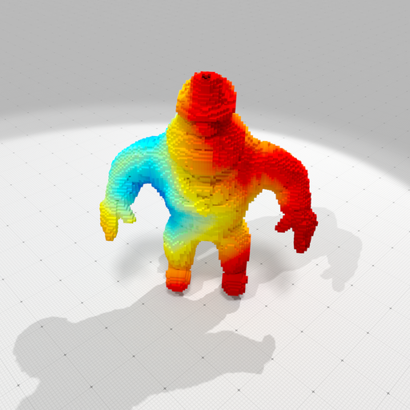
Rendering of Al Capone with a breadth-first traversal colored according to distance (blue to red).
-> build digital surface -> estimate curvatures -> save OBJ.
This example requires ShortcutsGeometry. It shows how tu use the integral invariant curvature estimator on a digital shape model to estimate its mean or Gaussian curvature.
auto params = SH3::defaultParameters() | SHG3::defaultParameters();
params( "colormap", "Tics" );
auto bimage = SH3::makeBinaryImage( examplesPath + "samples/Al.100.vol", params );
auto K = SH3::getKSpace( bimage, params );
auto surface = SH3::makeDigitalSurface( bimage,
K, params );
auto surfels = SH3::getSurfelRange(
surface, params );
auto curv = SHG3::getIIMeanCurvatures( bimage, surfels, params );
auto cmap = SH3::getColorMap( -0.5, 0.5, params );
auto colors = SH3::Colors( surfels.size() );
std::transform( curv.cbegin(), curv.cend(), colors.begin(), cmap );
bool ok = SH3::saveOBJ(
surface, SH3::RealVectors(), colors,
"al-H-II.obj" );
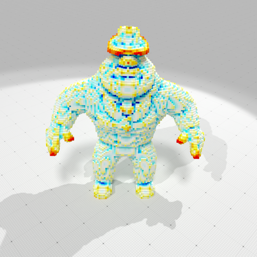
Rendering of Al Capone with estimated mean curvatures (blue is negative, white zero, red is positive, scale is [-0.5, 0.5]). |
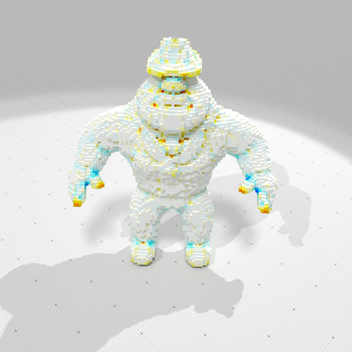
Rendering of Al Capone with estimated Gaus curvatures (blue is negative, white zero, red is positive, scale is [-0.25, 0.25]). |
Build polynomial shape -> digitize -> ...
-> noisify -> save as vol file.
params( "polynomial", "3*x^2+2*y^2+z^2-90" )( "gridstep", 0.25 )
( "noise", 0.3 );
auto implicit_shape = SH3::makeImplicitShape3D( params );
auto digitized_shape = SH3::makeDigitizedImplicitShape3D( implicit_shape, params );
auto noisy_shape = SH3::makeBinaryImage ( digitized_shape, params );
auto ok = SH3::saveBinaryImage ( noisy_shape, "noisy-ellipsoid.vol" );
-> build surface -> save primal surface as obj
- Note
- The OBJ file is generally not a combinatorial 2-manifold, since digital surfaces, seen as squares stitched together, are manifold only when they are well-composed.
params( "polynomial", "goursat" )( "gridstep", 0.25 );
auto implicit_shape = SH3::makeImplicitShape3D ( params );
auto digitized_shape = SH3::makeDigitizedImplicitShape3D( implicit_shape, params );
auto K = SH3::getKSpace( params );
auto binary_image = SH3::makeBinaryImage( digitized_shape, params );
bool ok = SH3::saveOBJ(
surface,
"goursat-primal.obj" );
CountedPtr< SH3::BinaryImage > binary_image
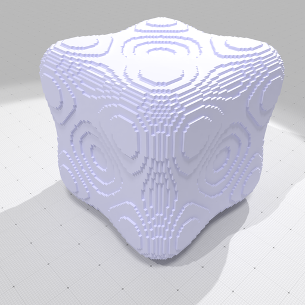
Rendering of goursat-primal.obj.
-> build indexed surface on a subpart
You may choose which part of a domain is digitized as a binary image, here the first orthant is chosen.
params( "polynomial", "leopold" )( "gridstep", 0.25 )
( "minAABB", -12.0 )( "maxAABB", 12.0 )
( "surfaceComponents", "All" );
auto implicit_shape = SH3::makeImplicitShape3D ( params );
auto digitized_shape = SH3::makeDigitizedImplicitShape3D( implicit_shape, params );
auto Kwhole = SH3::getKSpace( params );
params );
static Self zero
Static const for zero PointVector.
HyperRectDomain< Space > Domain
-> noisify -> count components -> save OBJ with different colors.
params( "polynomial", "leopold" )( "gridstep", 0.25 )
( "minAABB", -12.0 )( "maxAABB", 12.0 )
( "surfaceComponents", "All" )( "noise", 0.5 );
auto implicit_shape = SH3::makeImplicitShape3D ( params );
auto digitized_shape = SH3::makeDigitizedImplicitShape3D( implicit_shape, params );
auto K = SH3::getKSpace( params );
params );
auto vec_surfs = SH3::makeLightDigitalSurfaces(
binary_image,
K, params );
trace.
info() <<
"#connected components = " << vec_surfs.size() << std::endl;
std::map< SH3::Surfel, unsigned int> label;
unsigned int n = 0;
for ( auto&& surf : vec_surfs ) {
auto surfels = SH3::getSurfelRange( surf, params );
for ( auto&& s : surfels ) label[ s ] = n;
n += 1;
}
auto cmap = SH3::getColorMap( 0, vec_surfs.size(), params );
auto all_surfels = SH3::getSurfelRange(
surface, params );
SH3::Colors colors( all_surfels.size() );
for ( unsigned int i = 0; i < all_surfels.size(); ++i )
colors[ i ] = cmap( label[ all_surfels[ i ] ] );
bool ok = SH3::saveOBJ(
surface, SH3::RealVectors(), colors,
"leopold-primal-cc.obj" );
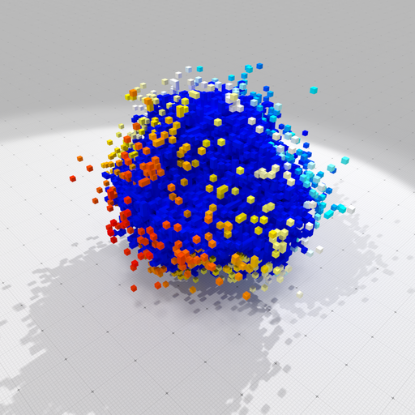
Rendering of leopold-primal-cc.obj.
-> extract ground-truth geometry
This example requires ShortcutsGeometry. It shows you how to recover ground-truth positions, normal vectors, mean and Gaussian curvatures onto an implicit 3D shape. For each surfel, the geometry is the one of the point nearest to the given surfel centroid.
params( "polynomial", "3*x^2+2*y^2+z^2-90" )( "gridstep", 0.25 );
auto implicit_shape = SH3::makeImplicitShape3D ( params );
auto digitized_shape = SH3::makeDigitizedImplicitShape3D( implicit_shape, params );
auto binary_image = SH3::makeBinaryImage ( digitized_shape, params );
auto K = SH3::getKSpace( params );
auto surfels = SH3::getSurfelRange(
surface, params );
auto positions = SHG3::getPositions( implicit_shape,
K, surfels, params );
auto normals = SHG3::getNormalVectors( implicit_shape,
K, surfels, params );
auto mean_curvs = SHG3::getMeanCurvatures( implicit_shape,
K, surfels, params );
auto gauss_curvs = SHG3::getGaussianCurvatures( implicit_shape,
K, surfels, params );
-> get pointels -> save projected quadrangulated surface.
This example requires ShortcutsGeometry. It shows you how to get pointels from a digital surface and how to project the digital surface onto the given implicit shape.
const double h = 0.25;
params( "polynomial", "goursat" )( "gridstep", h );
auto implicit_shape = SH3::makeImplicitShape3D ( params );
auto digitized_shape = SH3::makeDigitizedImplicitShape3D( implicit_shape, params );
auto binary_image = SH3::makeBinaryImage ( digitized_shape, params );
auto K = SH3::getKSpace( params );
auto embedder = SH3::getCellEmbedder(
K );
SH3::Cell2Index c2i;
auto pointels = SH3::getPointelRange( c2i,
surface );
SH3::RealPoints pos( pointels.size() );
std::transform( pointels.cbegin(), pointels.cend(), pos.begin(),
[&] (
const SH3::Cell& c) { return h * embedder( c ); } );
auto ppos = SHG3::getPositions( implicit_shape, pos, params );
[&] (
const SH3::Cell& c){
return ppos[ c2i[ c ] ];},
SH3::RealVectors(), SH3::Colors(),
"goursat-quad-proj.obj" );
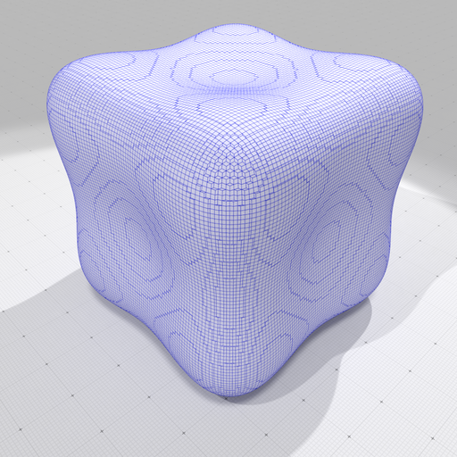
Rendering of goursat-quad-proj.obj with quad edges in blue.
-> extract mean curvature -> save as OBJ with colors
This example requires ShortcutsGeometry. The ground-truth mean curvature is just displayed as a color, using the specified colormap.
params( "polynomial", "goursat" )( "gridstep", 0.25 )( "colormap", "Tics" );
auto implicit_shape = SH3::makeImplicitShape3D ( params );
auto digitized_shape = SH3::makeDigitizedImplicitShape3D( implicit_shape, params );
auto binary_image = SH3::makeBinaryImage ( digitized_shape, params );
auto K = SH3::getKSpace( params );
auto surfels = SH3::getSurfelRange(
surface, params );
auto mean_curv = SHG3::getMeanCurvatures( implicit_shape,
K, surfels, params );
auto cmap = SH3::getColorMap( -0.3, 0.3, params );
auto colors = SH3::Colors( surfels.size() );
std::transform( mean_curv.cbegin(), mean_curv.cend(), colors.begin(), cmap );
bool ok = SH3::saveOBJ(
surface, SH3::RealVectors(), colors,
"goursat-H.obj" );
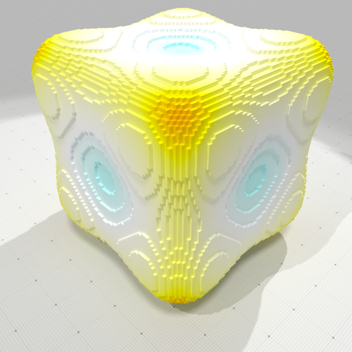
Rendering of goursat-H.obj
-> extract ground-truth and estimated mean curvature -> display errors in OBJ with colors
This example requires ShortcutsGeometry. Both ground-truth and estimated mean curvature are computed. Then you have functions like ShortcutsGeometry::getScalarsAbsoluteDifference and ShortcutsGeometry::getStatistic to measure errors or ShortcutsGeometry::getVectorsAngleDeviation to compare vectors.
params( "polynomial", "goursat" )( "gridstep", 0.25 )( "colormap", "Tics" )
( "R-radius", 5.0 );
auto implicit_shape = SH3::makeImplicitShape3D ( params );
auto digitized_shape = SH3::makeDigitizedImplicitShape3D( implicit_shape, params );
auto bimage = SH3::makeBinaryImage ( digitized_shape, params );
auto K = SH3::getKSpace( params );
auto surface = SH3::makeLightDigitalSurface( bimage,
K, params );
auto surfels = SH3::getSurfelRange(
surface, params );
auto t_curv = SHG3::getMeanCurvatures( implicit_shape,
K, surfels, params );
auto ii_curv = SHG3::getIIMeanCurvatures( bimage, surfels, params );
auto cmap = SH3::getColorMap( -0.5, 0.5, params );
auto colors = SH3::Colors( surfels.size() );
std::transform( t_curv.cbegin(), t_curv.cend(), colors.begin(), cmap );
bool ok_t = SH3::saveOBJ(
surface, SH3::RealVectors(), colors,
"goursat-H.obj" );
std::transform( ii_curv.cbegin(), ii_curv.cend(), colors.begin(), cmap );
bool ok_ii = SH3::saveOBJ(
surface, SH3::RealVectors(), colors,
"goursat-H-ii.obj" );
auto errors = SHG3::getScalarsAbsoluteDifference( t_curv, ii_curv );
auto stat_errors = SHG3::getStatistic( errors );
auto cmap_errors = SH3::getColorMap( 0.0, stat_errors.max(), params );
std::transform( errors.cbegin(), errors.cend(), colors.begin(), cmap_errors );
bool ok_err = SH3::saveOBJ(
surface, SH3::RealVectors(), colors,
"goursat-H-ii-err.obj" );
trace.
info() <<
"Error Loo=" << SHG3::getScalarsNormLoo( t_curv, ii_curv )
<< " L1=" << SHG3::getScalarsNormL1 ( t_curv, ii_curv )
<< " L2=" << SHG3::getScalarsNormL2 ( t_curv, ii_curv )
<< std::endl;
Ground truth mean curvature
|
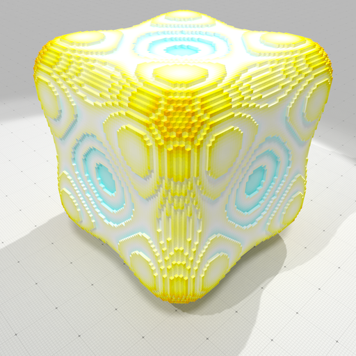
Estimated II mean curvature |
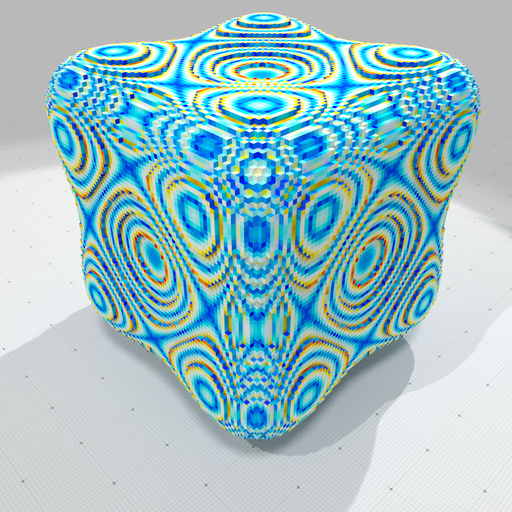
Highlight estimation errors (blue small, red high) |
-> build surface -> save primal surface with vcm normals as obj
This example requires ShortcutsGeometry.
- Note
- The OBJ file is generally not a combinatorial 2-manifold, since digital surfaces, seen as squares stitched together, are manifold only when they are well-composed.
params( "polynomial", "goursat" )( "gridstep", 0.25 )
( "surfaceTraversal", "Default" );
auto implicit_shape = SH3::makeImplicitShape3D ( params );
auto digitized_shape = SH3::makeDigitizedImplicitShape3D( implicit_shape, params );
auto K = SH3::getKSpace( params );
auto binary_image = SH3::makeBinaryImage( digitized_shape, params );
auto surfels = SH3::getSurfelRange(
surface, params );
auto vcm_normals = SHG3::getVCMNormalVectors(
surface, surfels, params );
bool ok = SH3::saveOBJ(
surface, vcm_normals, SH3::Colors(),
"goursat-primal-vcm.obj" );
Rendering of goursat-primal.obj (no normals).
|
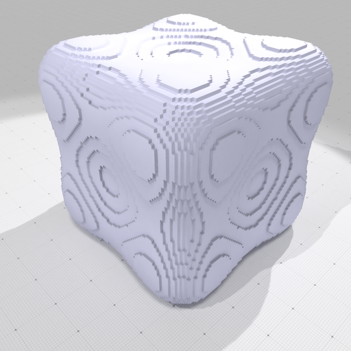
Rendering of goursat-primal-vcm.obj (normals estimated by VCM). Note that staircases effects are still very visible, although normals are good. |
-> digitize implicitly -> estimate II normals and curvature.
This example requires ShortcutsGeometry. You may also analyze the geometry of a digital implicitly defined surface without generating a binary image and only traverse the surface.
params( "polynomial", "goursat" )( "gridstep", .25 );
auto implicit_shape = SH3::makeImplicitShape3D ( params );
auto dig_shape = SH3::makeDigitizedImplicitShape3D( implicit_shape, params );
auto K = SH3::getKSpace ( params );
auto surface = SH3::makeDigitalSurface ( dig_shape,
K, params );
auto surfels = SH3::getSurfelRange (
surface, params(
"surfaceTraversal",
"DepthFirst" ) );
auto def_surfels = SH3::getSurfelRange (
surface, params(
"surfaceTraversal",
"Default" ) );
auto ii_normals = SHG3::getIINormalVectors ( dig_shape, surfels, params );
auto ii_mean_curv = SHG3::getIIMeanCurvatures ( dig_shape, def_surfels, params );
auto ii_mean_curv2 = SHG3::getIIMeanCurvatures ( dig_shape, surfels, params );
auto cmap = SH3::getColorMap ( -0.5, 0.5, params );
auto colors = SH3::Colors ( def_surfels.size() );
auto match = SH3::getRangeMatch ( def_surfels, surfels );
auto normals = SH3::getMatchedRange ( ii_normals, match );
for (
SH3::Idx i = 0; i < colors.size(); i++ )
colors[ i ] = cmap( ii_mean_curv[ match[ i ] ] );
bool ok_H = SH3::saveOBJ(
surface, SH3::RealVectors(), colors,
"goursat-imp-H-ii.obj" );
void beginBlock(const std::string &keyword="")
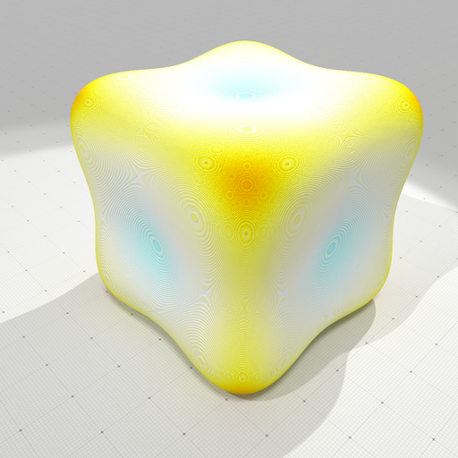
Rendering of goursat-imp-H-ii.obj with a gridstep of 0.03125, more than 2e6 surfels.
-> digitize -> save primal surface and VCM normal field as obj
This example requires ShortcutsGeometry. You may estimate the normals to a surface by the VCM normal estimator.
params( "polynomial", "goursat" )( "gridstep", 0.5 )
( "surfaceTraversal", "Default" );
auto implicit_shape = SH3::makeImplicitShape3D ( params );
auto digitized_shape = SH3::makeDigitizedImplicitShape3D( implicit_shape, params );
auto K = SH3::getKSpace( params );
auto binary_image = SH3::makeBinaryImage( digitized_shape, params );
auto surfels = SH3::getSurfelRange(
surface, params );
auto vcm_normals = SHG3::getVCMNormalVectors(
surface, surfels, params );
auto embedder = SH3::getSCellEmbedder(
K );
SH3::RealPoints positions( surfels.size() );
std::transform( surfels.cbegin(), surfels.cend(), positions.begin(),
[&] (
const SH3::SCell& c) { return embedder( c ); } );
bool ok = SH3::saveOBJ(
surface, vcm_normals, SH3::Colors(),
"goursat-primal-vcm.obj" );
bool ok2 = SH3::saveVectorFieldOBJ( positions, vcm_normals, 0.05, SH3::Colors(),
"goursat-primal-vcm-normals.obj",
LightDigitalSurface::SCell SCell
-> digitize -> II normals -> AT piecewise-smooth approximation
This example requires ShortcutsGeometry. You may also use the Ambrosio-Tortorelli functional to get a piecewise smooth approximation of an arbitrary scalar or vector field over a surface. Here we use it to get a piecewise smooth approximation of the II normals.
auto al_capone = SH3::makeBinaryImage( examplesPath + "samples/Al.100.vol", params );
auto K = SH3::getKSpace( al_capone );
auto surface = SH3::makeLightDigitalSurface( al_capone,
K, params );
auto surfels = SH3::getSurfelRange(
surface, params );
auto ii_normals = SHG3::getIINormalVectors( al_capone, surfels, params );
auto linels = SH3::getCellRange(
surface, 1 );
auto uembedder = SH3::getCellEmbedder(
K );
auto at_normals = SHG3::getATVectorFieldApproximation( features, linels.cbegin(), linels.cend(),
ii_normals, params );
SH3::Colors colors( surfels.size() );
for ( size_t i = 0; i < surfels.size(); i++ )
colors[ i ] =
SH3::Color( (
unsigned char) 255.0*fabs( at_normals[ i ][ 0 ] ),
(unsigned char) 255.0*fabs( at_normals[ i ][ 1 ] ),
(unsigned char) 255.0*fabs( at_normals[ i ][ 2 ] ) );
bool ok1 = SH3::saveOBJ(
surface, SH3::RealVectors(), SH3::Colors(),
"al-surface.obj" );
bool ok2 = SH3::saveOBJ(
surface, at_normals, colors,
"al-colored-at-normals.obj" );
SH3::RealPoints f0;
SH3::RealVectors f1;
for ( size_t i = 0; i < linels.size(); i++ )
{
if ( features[ i ] < 0.5 )
{
const SH3::Cell p0 =
K.uIncident( linel, d,
false );
const SH3::Cell p1 =
K.uIncident( linel, d,
true );
f0.push_back( uembedder( p0 ) );
f1.push_back( uembedder( p1 ) - uembedder( p0 ) );
}
}
bool ok3 = SH3::saveVectorFieldOBJ( f0, f1, 0.1, SH3::Colors(),
"al-features.obj",
std::vector< Scalar > Scalars
DGtal::uint32_t Dimension
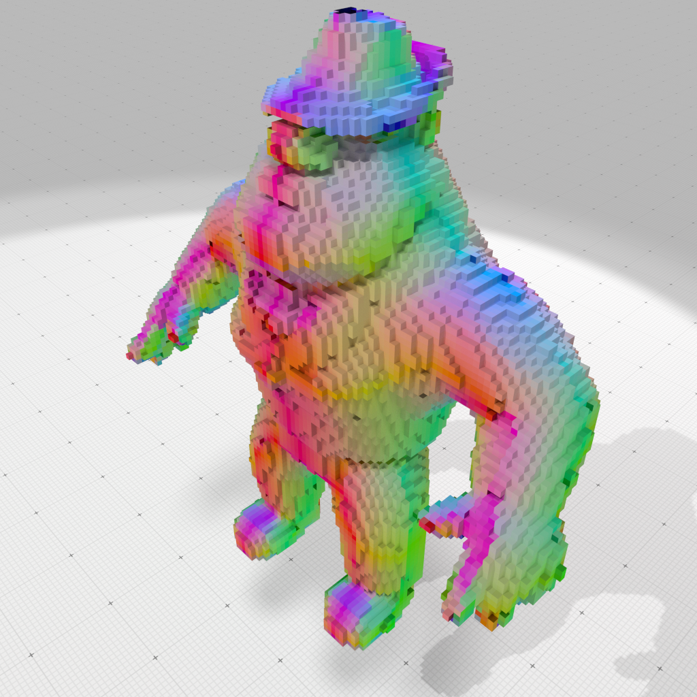
Piecewise-smooth normals displayed as colors on Al-150 dataset. |
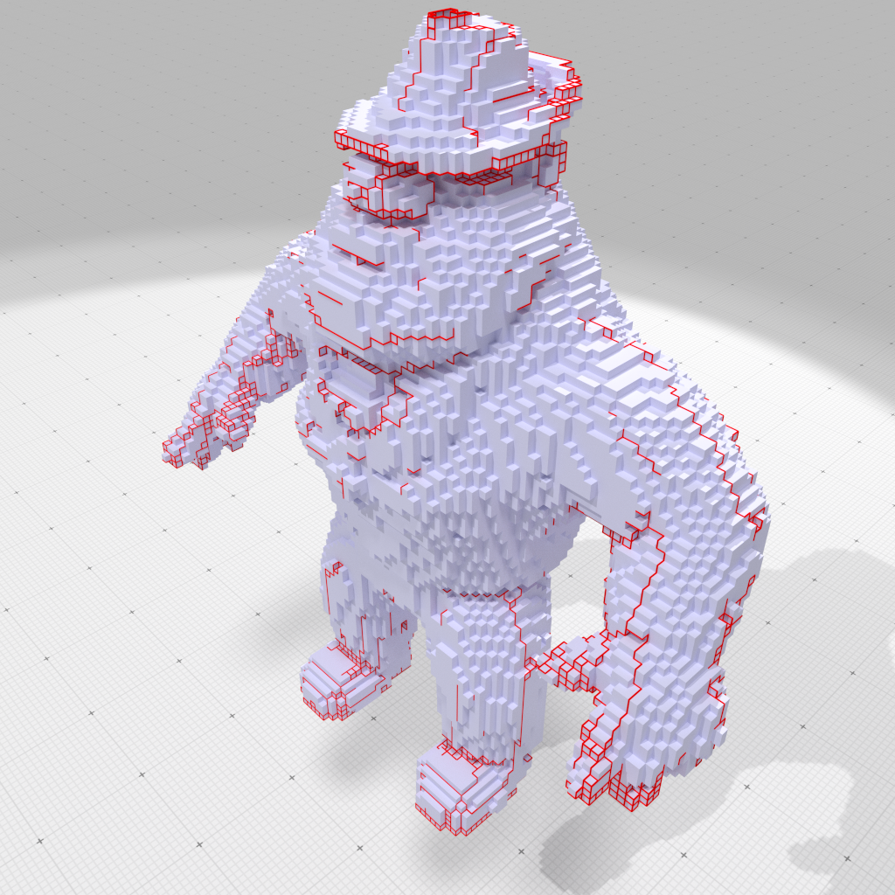
Discontinuities of the piecewise-smooth normal vector field on Al-150 dataset. |
-> digitize -> True principal curvatures
This example requires ShortcutsGeometry. You can easily get the expected principal curvatures and principal directions onto a digitized implicit shape.
params( "polynomial", "goursat" )( "gridstep", 0.25 )( "colormap", "Tics" );
auto implicit_shape = SH3::makeImplicitShape3D ( params );
auto digitized_shape = SH3::makeDigitizedImplicitShape3D( implicit_shape, params );
auto bimage = SH3::makeBinaryImage ( digitized_shape, params );
auto K = SH3::getKSpace( params );
auto surface = SH3::makeLightDigitalSurface( bimage,
K, params );
auto surfels = SH3::getSurfelRange(
surface, params );
auto k1 = SHG3::getFirstPrincipalCurvatures( implicit_shape,
K, surfels, params );
auto k2 = SHG3::getSecondPrincipalCurvatures( implicit_shape,
K, surfels, params );
auto d1 = SHG3::getFirstPrincipalDirections( implicit_shape,
K, surfels, params );
auto d2 = SHG3::getSecondPrincipalDirections( implicit_shape,
K, surfels, params );
auto embedder = SH3::getSCellEmbedder(
K );
SH3::RealPoints positions( surfels.size() );
std::transform( surfels.cbegin(), surfels.cend(), positions.begin(),
[&] (
const SH3::SCell& c) { return embedder( c ); } );
SH3::saveOBJ(
surface, SH3::RealVectors(), SH3::Colors(),
"goursat-primal.obj" );
auto cmap = SH3::getColorMap( -0.5, 0.5, params );
auto colors= SH3::Colors( surfels.size() );
std::transform( k1.cbegin(), k1.cend(), colors.begin(), cmap );
bool ok_k1 = SH3::saveOBJ(
surface, SH3::RealVectors(), colors,
"goursat-primal-k1.obj" );
bool ok_d1 = SH3::saveVectorFieldOBJ( positions, d1, 0.05, colors,
std::transform( k2.cbegin(), k2.cend(), colors.begin(), cmap );
bool ok_k2 = SH3::saveOBJ(
surface, SH3::RealVectors(), colors,
"goursat-primal-k2.obj" );
bool ok_d2 = SH3::saveVectorFieldOBJ( positions, d2, 0.05, colors,
ASSERT(ok_k1 && ok_d1 && ok_k2 && ok_d2);
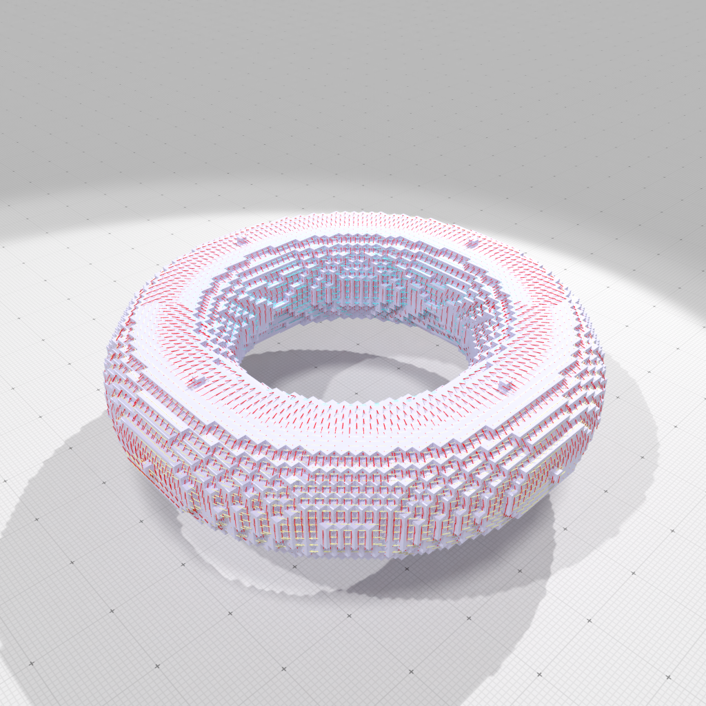
Principal directions of curvatures colored according to their value (blue negative, red positive) on a torus. |
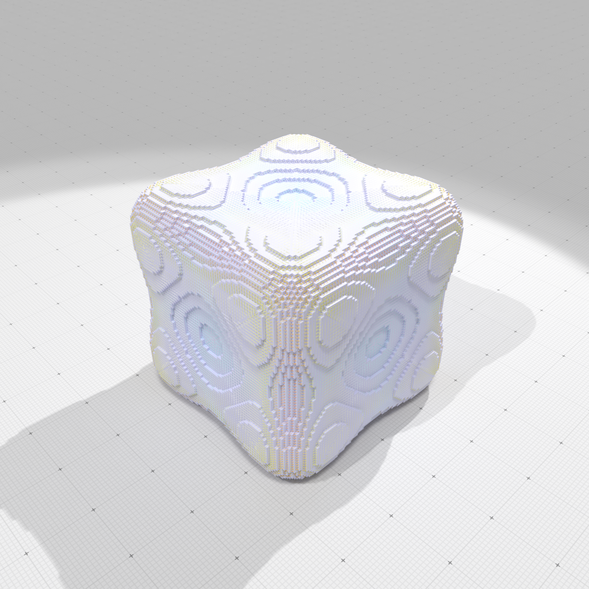
Principal directions of curvatures colored according to their value (blue negative, red positive) on goursat shape. |
Few 2D examples
We give below some minimalistic examples to show that shortcuts can save a lot of lines of code. All examples need at least the following lines:
#include "DGtal/helpers/StdDefs.h"
#include "DGtal/helpers/Shortcuts.h"
...
typedef Shortcuts<Z2i::KSpace>
SH2;
auto params = SH2::defaultParameters();
Load pgm file -> ...
-> threshold -> save pgm
auto g_image = SH2::makeGrayScaleImage( examplesPath + "samples/contourS.pgm" );
auto b_image = SH2::makeBinaryImage ( g_image, params( "thresholdMin", 128 ) );
auto ok = SH2::saveBinaryImage ( b_image, "contourS-128.pgm" );
Philosophy and naming conventions
Commands are constructed as prefix + type name. Most of them are static methods and are overloaded to accept different set of parameters.
Prefixes
- make +
Type: means that it will create a new object of type Type and returns it as a smart pointer onto it. Depending on parameters, make can load a file, copy and transform an object, build an empty/not object according to parameters.
- make +
Type + s: means that it will create new objects of type Type and returns them as a vector of smart pointers onto it.
- make +
Spec + Type: means that it will create a new object of type Type with some specialized meaning according to Spec and returns it as a smart pointer onto it.
- save +
Type: means that it will save the pointed object of type Type as a file.
- parameters +
Type: returns the Parameters object associated to the operations related to the given Type.
- get +
Type: means that it will return by value an object of type Type.
Types
The following name conventions for types are used. They are defined according to your choice of cellular grid space when defining the Shortcuts type. For instance, if Z3i::KSpace was chosen, then Shortcuts::Point is Z3i::KSpace::Point.
- Shortcuts::Point: represents a point with integer coordinates.
- Shortcuts::Vector: represents a vector with integer coordinates.
- Shortcuts::RealPoint: represents a point with floating-point coordinates.
- Shortcuts::RealVector: represents a vector with floating-point coordinates.
- Shortcuts::Domain: represents an (hyper-)rectangular digital domain.
- Shortcuts::Integer: represents integer numbers (for Point coordinates and Vector components)
- Shortcuts::Space: represents a digital space (generally a SpaceND)
- Shortcuts::KSpace: represents a cellular grid space (generally a KhalimskySpaceND)
- Shortcuts::ImplicitShape3D: represents a functor RealPoint -> Scalar which adds geometry services: isInside, orientation, gradient, meanCurvature, GaussianCurvature, principalCurvatures, nearestPoint
- Shortcuts::DigitizedImplicitShape3D: represents the digitization of an ImplicitShape3D as a predicate Point -> bool (isInside), and adds some services: getLowerBound, getUpperBound, embed, round, getDomain, gridSteps, resolution. Note that pixels/voxels are not stored explicitly, so the resolution may be arbirary high.
- Shortcuts::BinaryImage: represents a black and white image as an array of bits. It is generally a faster representation of a predicate Point -> bool than an implicit digital shape.
- Shortcuts::GrayScaleImage: represents an 8-bits gray-scale image as an array of bytes (unsigned char).
- Shortcuts::FloatImage: represents a float image as an array of floats.
- Shortcuts::DoubleImage: represents a double image as an array of doubles.
- Shortcuts::LightDigitalSurface: represents a connected digital surface over a binary image with an implicit representation.
- Shortcuts::DigitalSurface: represents an arbitrary digital surface with an explicit surfel set representation.
- Shortcuts::IdxDigitalSurface: represents an indexed digital surface with an explicit array-like representation.
- Shortcuts::Mesh: represents a simple mesh with arbitrary faces, but without topology (should be used when no surface topology is needed or when working with non-manifold surfaces).
- Shortcuts::TriangulatedSurface: represents a triangulated surface which may have boundaries (use HalfEdgeDataStructure).
- Shortcuts::PolygonalSurface: represents a polygonal surface which may have boundaries (use HalfEdgeDataStructure).
- Shortcuts::ColorMap: represents a colormap, i.e. a function assigning a color to a real value.
Main methods
- General methods
- ImplicitShape3D methods
- KSpace methods
- DigitizedImplicitShape3D methods
- BinaryImage methods
- GrayScaleImage methods
- FloatImage methods
- DoubleImage methods
- DigitalSurface methods
- Shortcuts::parametersDigitalSurface: parameters related to digital surfaces (surfel adjacency, components, internal heuristics)
- Shortcuts::getCellEmbedder: returns the canonic cell embedder of the given (indexed or not) digital surface
- Shortcuts::getSCellEmbedder: returns the canonic signed cell embedder of the given (indexed or not) digital surface.
- Shortcuts::makeLightDigitalSurface: creates a light connected surface around a (random) big enough component of a binary image
- Shortcuts::makeLightDigitalSurfaces: creates the vector of all light digital surfaces of the binary image or any one of its big components, can also output representant surfels
- Shortcuts::makeDigitalSurface: creates an arbitrary (connected or not) digital surface from a binary image, from a digitized implicit shape or from an indexed digital surface.
- Shortcuts::makeIdxDigitalSurface: creates an indexed digital surfaces that represents all the boundaries of a binary image or any one of its big components, or any given collection of surfels, or from light digital surface(s).
- Shortcuts::getSurfelRange: returns the surfels of a digital surface in the specified traversal order.
- Shortcuts::getCellRange: returns the k-dimensional cells of a digital surface in a the default traversal order (be careful, when it is not surfels, the order corresponds to the surfel order, and then to the incident cells).
- Shortcuts::getIdxSurfelRange: returns the indexed surfels of an indexed digital surface in the specified traversal order.
- Shortcuts::getPointelRange: returns the pointels of a digital surface in the default order and optionnaly the map Pointel -> Index giving the indices of each pointel, or simply the pointels around a surfel.
- Shortcuts::saveOBJ: several overloaded functions that save geometric elements as an OBJ file. You may save a digital surface as an OBJ file, with optionally positions, normals and colors information
- RealVectors methods
- Mesh services
- Utilities
- ShapeGeometry services
- GeometryEstimation services
- ATApproximation services
Parameters
In all methods, out parameters are listed before in parameters. Also, methods whose result can be influenced by global parameters are parameterized through a Parameters object. Hence static methods follow this pattern:
<return-type> Shortcuts::fonction-name ( [ <out-parameter(s)> ], [ <in-parameter(s)> ], [ Parameters params ] )
The simplest way to get default values for global parameters is to start with a line:
static Parameters defaultParameters()
And then to change your parameter settings with Parameters::operator(), for instance:
params( "gridstep", 0.1 )( "closed", 1 );
You also have the bitwise-or (operator|) to merge Parameters.
 1.9.1
1.9.1